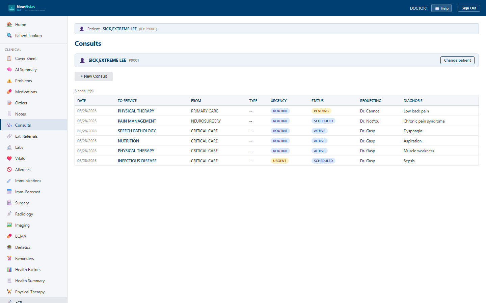

Consults
The Consults screen is where you request a consult to another service, track it through its lifecycle, and complete it with a result note. It is the equivalent of the CPRS Consults tab.
Open Consults
- In the sidebar, click Consults (or go to
/consults). - If a patient is already in context, their consults load automatically. Otherwise, in the patient bar type the patient ID (e.g.
P9001) and click Load.

What you see
The consults list
The body is a table of the patient's consults, showing Date, To Service, From, Type, Urgency, Status, Requesting provider, and Diagnosis. Click a row to open the full consult.
- Urgency badges: STAT in red, Urgent in amber, Routine in blue.
- Status badges track the lifecycle — PENDING, ACTIVE, SCHEDULED, COMPLETE, CANCELLED.
- A
[Note]marker means a result document is attached.
Requesting a consult
Click + New Consult to open the request form. Enter the To Service (required, e.g. Cardiology), optionally the From Service, set Urgency, pick the Requesting Provider and Attention provider, add a Provisional Diagnosis, and type the Reason for Request, then Submit Request.
Working a consult
Open a consult to see its detail and the actions that fit its status: Accept or Cancel a PENDING consult, Schedule an ACTIVE one, and Complete an ACTIVE or SCHEDULED one with a result note. The detail also has sections to set the consult type, clinical history, follow-up recommendation, consulting provider, interfacility details, and to add tracking comments.